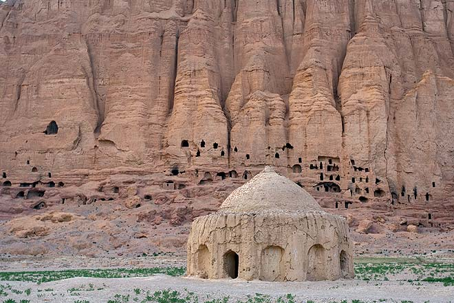
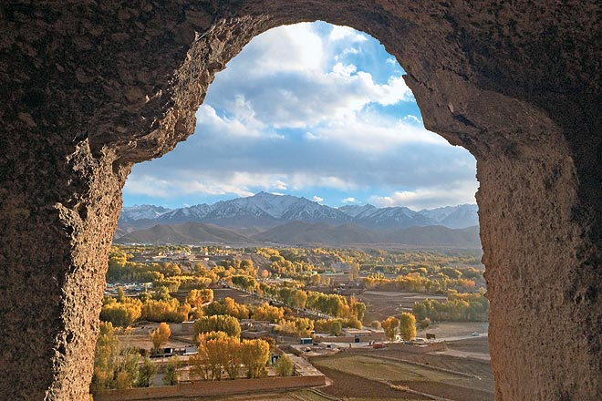
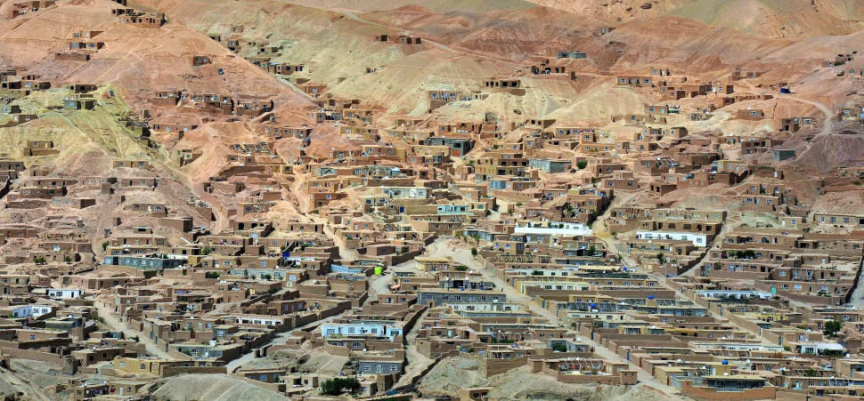

The two Bamyan Buddha statues, each standing at 55 meters and 35 meters tall, once finished, were decorated with fine clay plaster and painted with oil, making them and their surrounding caves, where the monks settled, some of the oldest oil paintings in the history of human-kind. According to UNESCO, the cultural landscape and archaeological remains of the Bamiyan Valley represent the artistic and religious developments which from the 1st to the 13th centuries characterized ancient Bakhtria, integrating various cultural influences into the Gandhara school of Buddhist art. In several of the caves and niches, often linked by galleries, there are remains of wall paintings and seated Buddha figures.
In the valleys of the Bamyan's tributaries are further groups of caves including the Kakrak Valley Caves, some 3km south-east of the Bamyan Cliffs where among the more than one hundred caves dating from the 6th to 13th centuries are fragments of a 10m tall standing Buddha figure and a sanctuary with painted decorations from the Sasanian period. UNESCO noted the Bamiyan Valley is the most monumental expression of the western Buddhism. It was an important centre of pilgrimage over many centuries. Due to their symbolic values, the monuments have suffered at different times of their existence, including the deliberate destruction in 2001, which shook the whole world. The artistic and architectural remains of Bamyan Valley, an important Buddhist centre on the Silk Road, are an exceptional testimony to the interchange of Indian, Hellenistic, Roman and Sasanian influences as the basis for the development of a particular artistic expression in the Gandharan school.